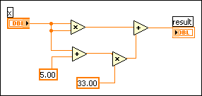
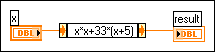

Use the Expression Node to calculate expressions that contain a single variable. Expression Nodes are useful when an expression has only one variable, but is otherwise complicated.
Expression Nodes use the value you pass to the input terminal as the value of the variable. The output terminal returns the value of the calculation.
For example, consider this simple expression:
x � x + 33 � (x + 5)
The following block diagram uses Numeric functions to represent this expression.

Use an Expression Node, shown as follows, to create a much simpler block diagram.

The input terminal of an Expression Node is the same data type as the control or constant you wire to it. The output terminal is the same data type as the input terminal. The data type of the input can be any non-complex scalar number, array of non-complex scalar numbers, or cluster of non-complex scalar numbers. With arrays and clusters, the expression node applies the expression to each element of an input array or cluster.